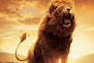
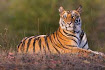
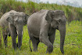
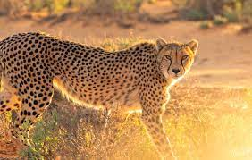

|  | The lion (Panthera leo) is a large felid of the genus Panthera native mainly to Africa. It has a muscular, deep-chested body, short, rounded head, round ears, and a hairy tuft at the end of its tail. It is sexually dimorphic; adult male lions have a prominent mane . With a typical head-to-body length of 184 to 208 cm (72 to 82 in) they are larger than females at 160 to 184 cm (63 to 72 in). |
|  | The tiger (Panthera tigris) is the largest living cat species and a member of the genus Panthera . It is most recognisable for its dark vertical stripes on orange-brown fur with a lighter underside. It is an apex predator , primarily preying on ungulates such as deer and wild boar. It is territorial and generally a solitary but social predator, requiring large contiguous areas of habitat. |
|  | Elephants are the largest existing land animals . Three species are currently recognised: the African bush elephant, the African forest elephant, and the Asian elephant. Elephantidae is the only surviving family of the order Proboscidea; extinct members include the mastodons . |
|  | The cheetah (Acinonyx jubatus) is a large cat native to Africa and central Irans . It is the fastest land animal , estimated to be capable of running at 80 to 128 km/h (50 to 80 mph) with the fastest reliably recorded speeds being 93 and 98 km/h (58 and 61 mph), and as such has several adaptations for speed, including a light build, long thin legs and a long tail. |